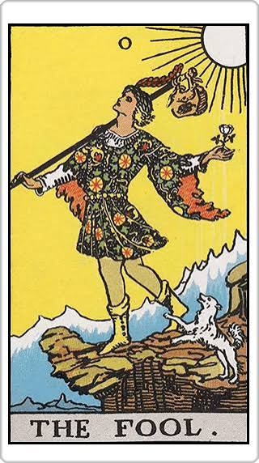
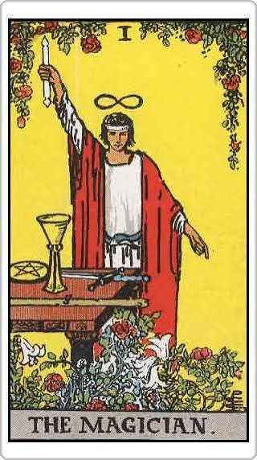
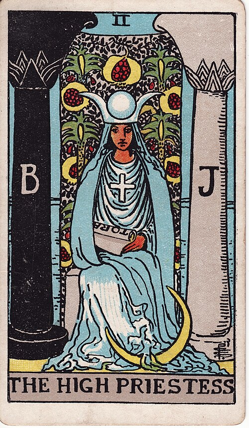
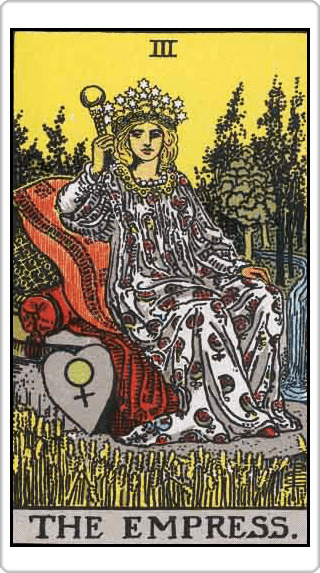
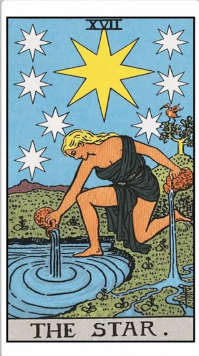
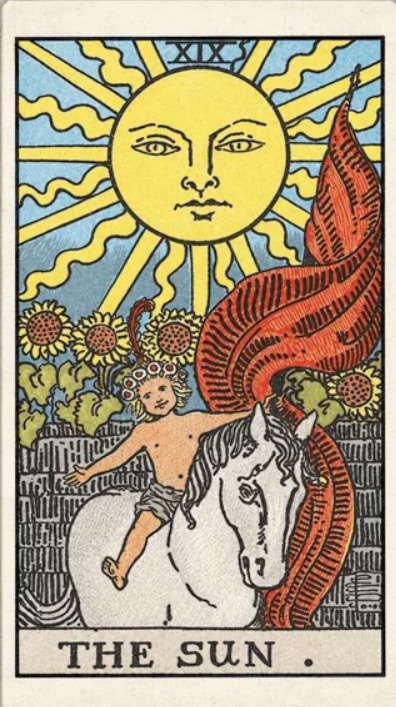

TAROT COLLECTION · 6 ใบ
ไพ่ทาโรต์ ดูดวงฟรี
เลือกไพ่ทาโรต์ที่สะดุดตา แล้วสำรวจความหมายสำหรับความรัก การงาน การเงิน และเรื่องที่อยู่ในใจ ใช้เป็นแนวทางในการทบทวนตัวเองได้ฟรี

YOUR TAROT · 00
The Fool
ไพ่แห่งการเริ่มต้น การเปิดรับประสบการณ์ใหม่ และความกล้าที่จะก้าวออกไป แม้ยังไม่รู้ว่าปลายทางจะเป็นอย่างไร ก็สามารถค่อย ๆ เรียนรู้ระหว่างทางได้
ไพ่ทั้งหมด
The Fool
การเริ่มต้น · กล้าที่จะลอง

The Magician
ความสามารถ · ลงมือทำ

The High Priestess
สัญชาตญาณ · ฟังเสียงข้างใน

The Empress
ความอุดมสมบูรณ์ · การดูแล

The Star
ความหวัง · ฟื้นพลังใจ

The Sun
ความชัดเจน · พลังบวก